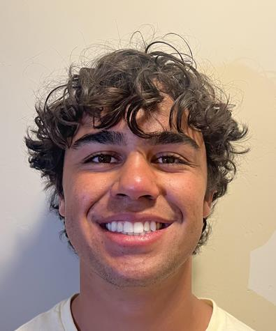

About Me

My name is Wesley Ricaporte, and I am a senior studying Electrical and Computer Engineering through the University of Colorado Boulder partnership program at Colorado Mesa University.
I first became interested in electrical engineering when I took Physics 2 in high school. I really enjoyed learning about electricity and magnetism, and that got me interested in how electrical systems work. That interest eventually led me to choose Electrical and Computer Engineering as my major.
One of my favorite parts of the program has been Senior Design. I enjoy working on projects where we get to take what we have learned in class and apply it to something that actually works.
My Career Goals
After graduating, I would like to work in electrical power systems and distribution, especially in the gold mining industry. I am interested in the electrical systems that keep large operations running and the engineering behind designing and maintaining those systems.
Why I Chose EMG Prosthetics
I chose to research EMG-controlled prosthetic hands because the technology combines electrical signals, sensors, and computer processing to solve a real-world problem. I thought it was interesting how electrical signals produced by muscles could be used to control a mechanical hand.
This topic connects to Electrical and Computer Engineering because it involves understanding signals and using technology to turn them into useful actions. It also shows how engineering can help improve people's everyday lives.